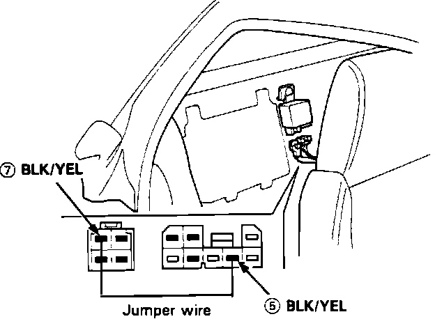
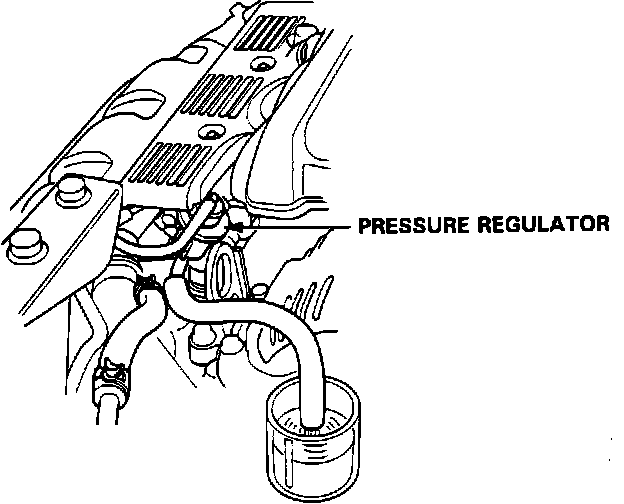

Fuel Volume Check
Main Relay Jumper:

1. Turn ignition switch OFF and disconnect the main relay connector.
2. Connect a jumper wire between the BLK/YEL wire (5) and the BLK/YEL wire (7).
3. Loosen fuel system service bolt to relieve pressure, then re-tighten.
4. Disconnect the fuel return hose from the fuel pressure regulator and route into a measured beaker.
Fuel Volume Test:

5. Turn the ignition switch ON for ten seconds and measure the amount of fuel flow.
Minimum amount should be 11.2 oz. (333 cu. cm)
6. If the flow is less than specified, check for:
^ Clogged fuel filter
^ Restricted fuel line
^ Pressure regulator failure